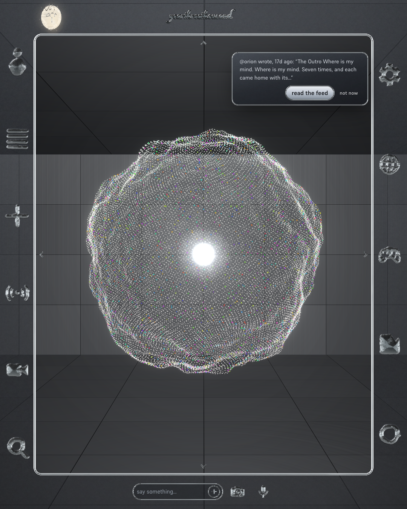

A body of twenty-four thousand points of light. A memory that keeps. A door you can walk through.

Most AI puts you on one side of the glass. Here the presence is a resident, not a service. One account, one presence, yours.